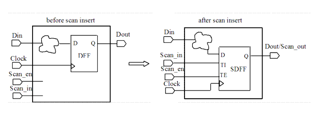

| Description | A test_enable port is needed at the chip boundary in order to set flip-flops to test mode. |
| Policy | DESIGN |
| Ruleset | DFT |
| Language | VHDL/Verilog |
| Type | Hardware |
| Severity | Error |
Here are valid and invalid Verilog code examples, followed by a circuit diagram that illustrates the correct approach:
// Invalid example module ntl_dft54_top(Clock, Din, Dout); // before scan insert input Clock, Din; ouput Dout; //Flop-flop -- DFF DFF U0(.D(Din), .CP(Clock), .Q(net_01)); // NTL_DFT54 fires -- the scan-enable signal is not inserted in this // design before scan -insert ... endmodule // Valid example module ntl_dft54_top(Clock, Scan_in, Scan_en, Din, Dout); //after scan insert input Clock, Din; input Scan_in,Scan_en; // there is at least one test-enable signal at the top-level output Dout; //Scan DFF -- SDFF SDFF U0(.D(Din), .CP(Clock), .TI(Dout_int), .TE( Scan_en), .Q(net_01)); // OK -- the scan-enable signal (U0.TE) in this design is available // after scan insert ... endmodule